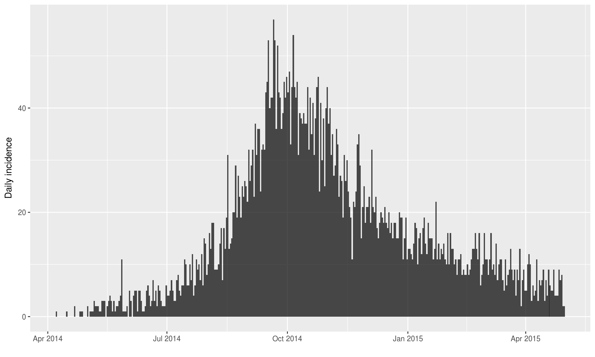
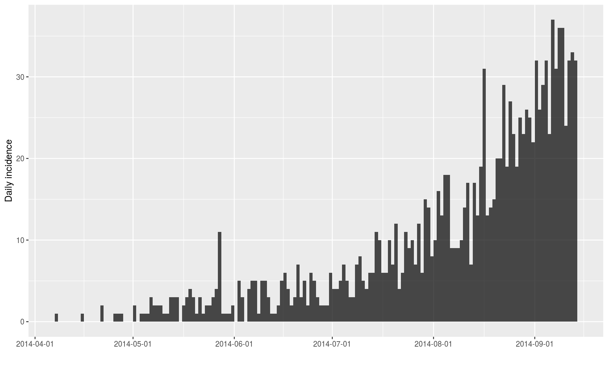
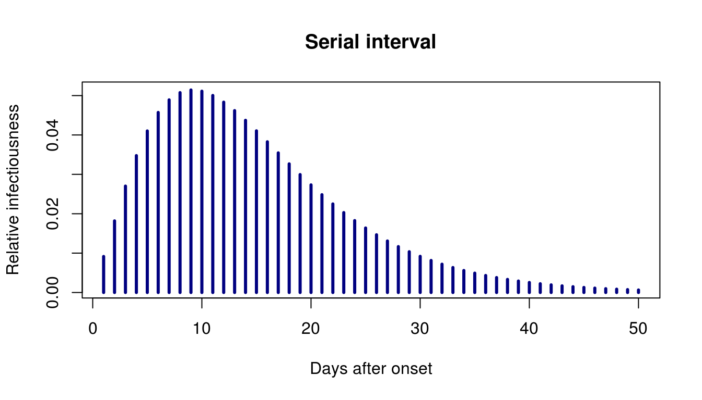
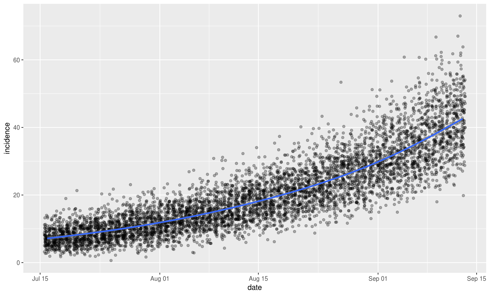
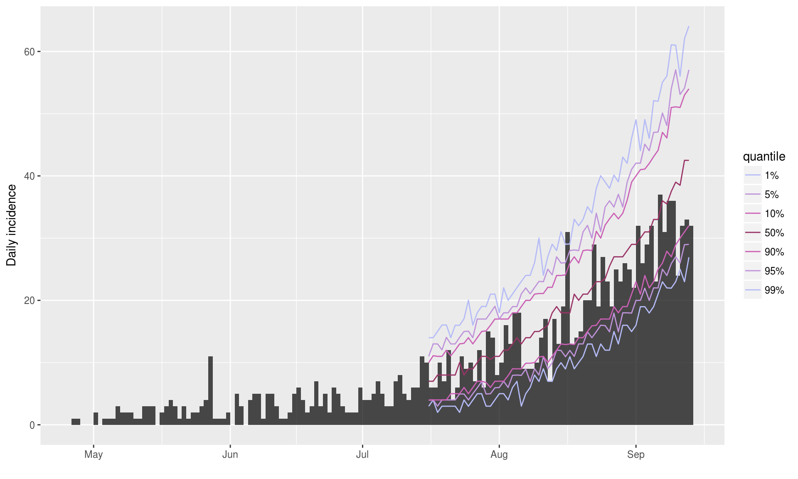

This package uses data on daily incidence, the serial interval (time between onsets of infectors and infectees) and the reproduction number to simulate plausible epidemic trajectories and project future incidence. It relies on a branching process where daily incidence follows a Poisson process determined by a daily infectiousness, computed as:
\[ \lambda_t = \sum_{s = 1}^{t - 1} y_s w(t - s) \]
where \(w()\) is the probability mass function (PMF) of the serial interval, and \(y_s\) is the incidence at time \(s\).
Installing the package
To install the current stable, CRAN version of the package, type:
install.packages("projections")To benefit from the latest features and bug fixes, install the development, github version of the package using:
devtools::install_github("reconhub/projections")Note that this requires the package devtools installed.
What does it do?
The main features of the package include:
project: a function generating projections from an existing incidence object, a serial interval distribution, and a set of plausible reproduction numbers (\(R\)); returns aprojectionsobject.plot/print: plotting and printing methods forprojectionsobjects.get_dates/get_incidence: accessors forprojectionsobjects.as.data.frame: conversion fromprojectionsobjects todata.frame.
Resources
Worked example
In the following, we project future incidence using a simulate Ebola outbreak distributed in the package outbreaks:
library(outbreaks)
library(incidence)
onset <- ebola_sim$linelist$date_of_onset
i <- incidence(onset)
plot(i) # full outbreak
plot(i[1:160]) # first 160 days
We create a serial interval distribution using distcrete:
library(distcrete)
library(epitrix)
mu <- 15.3
sigma <- 9.3
cv <- sigma / mu
params <- gamma_mucv2shapescale(mu, cv)
params## $shape
## [1] 2.706556
##
## $scale
## [1] 5.652941si <- distcrete("gamma", shape = params$shape,
scale = params$scale,
interval = 1, w = 0)
si## A discrete distribution
## name: gamma
## parameters:
## shape: 2.70655567117586
## scale: 5.65294117647059plot(1:50, si$d(1:50), type = "h", lwd = 3, col = "navy",
main = "Serial interval", xlab = "Days after onset",
ylab = "Relative infectiousness")
We predict future incidence based on these data, assuming a reproduction number of 1.5, from day 100 and for 60 days:
library(projections)
set.seed(1)
pred <- project(i[1:100], R = 1.5, si = si, n_days = 60)
pred##
## /// Incidence projections //
##
## // class: projections, matrix
## // 60 dates (rows); 100 simulations (columns)
##
## // first rows/columns:
## [,1] [,2] [,3] [,4] [,5] [,6]
## 2014-07-16 8 6 5 14 8 5
## 2014-07-17 8 4 7 7 6 14
## 2014-07-18 8 9 9 9 7 13
## 2014-07-19 12 11 10 9 9 4
## .
## .
## .
##
## // dates:
## [1] "2014-07-16" "2014-07-17" "2014-07-18" "2014-07-19" "2014-07-20"
## [6] "2014-07-21" "2014-07-22" "2014-07-23" "2014-07-24" "2014-07-25"
## [11] "2014-07-26" "2014-07-27" "2014-07-28" "2014-07-29" "2014-07-30"
## [16] "2014-07-31" "2014-08-01" "2014-08-02" "2014-08-03" "2014-08-04"
## [21] "2014-08-05" "2014-08-06" "2014-08-07" "2014-08-08" "2014-08-09"
## [26] "2014-08-10" "2014-08-11" "2014-08-12" "2014-08-13" "2014-08-14"
## [31] "2014-08-15" "2014-08-16" "2014-08-17" "2014-08-18" "2014-08-19"
## [36] "2014-08-20" "2014-08-21" "2014-08-22" "2014-08-23" "2014-08-24"
## [41] "2014-08-25" "2014-08-26" "2014-08-27" "2014-08-28" "2014-08-29"
## [46] "2014-08-30" "2014-08-31" "2014-09-01" "2014-09-02" "2014-09-03"
## [51] "2014-09-04" "2014-09-05" "2014-09-06" "2014-09-07" "2014-09-08"
## [56] "2014-09-09" "2014-09-10" "2014-09-11" "2014-09-12" "2014-09-13"plot(pred) # default plot of quantilesapply(pred, 1, mean) # average prediction per day## 2014-07-16 2014-07-17 2014-07-18 2014-07-19 2014-07-20 2014-07-21
## 7.21 7.50 7.85 7.89 8.20 8.15
## 2014-07-22 2014-07-23 2014-07-24 2014-07-25 2014-07-26 2014-07-27
## 8.46 9.27 9.01 9.38 9.44 10.21
## 2014-07-28 2014-07-29 2014-07-30 2014-07-31 2014-08-01 2014-08-02
## 11.13 10.95 10.84 11.55 11.42 12.20
## 2014-08-03 2014-08-04 2014-08-05 2014-08-06 2014-08-07 2014-08-08
## 12.19 13.17 13.99 13.78 14.39 14.32
## 2014-08-09 2014-08-10 2014-08-11 2014-08-12 2014-08-13 2014-08-14
## 15.29 15.54 16.12 16.13 17.12 18.33
## 2014-08-15 2014-08-16 2014-08-17 2014-08-18 2014-08-19 2014-08-20
## 18.59 18.17 18.99 20.29 20.24 20.96
## 2014-08-21 2014-08-22 2014-08-23 2014-08-24 2014-08-25 2014-08-26
## 21.65 21.97 23.41 23.13 24.30 25.14
## 2014-08-27 2014-08-28 2014-08-29 2014-08-30 2014-08-31 2014-09-01
## 26.47 26.07 26.64 27.75 29.24 30.19
## 2014-09-02 2014-09-03 2014-09-04 2014-09-05 2014-09-06 2014-09-07
## 30.87 31.94 31.87 33.59 33.69 35.98
## 2014-09-08 2014-09-09 2014-09-10 2014-09-11 2014-09-12 2014-09-13
## 36.36 38.54 39.53 39.78 41.56 43.24apply(pred, 1, range) # range across simulations## 2014-07-16 2014-07-17 2014-07-18 2014-07-19 2014-07-20 2014-07-21
## [1,] 2 3 2 2 2 2
## [2,] 14 15 16 19 21 15
## 2014-07-22 2014-07-23 2014-07-24 2014-07-25 2014-07-26 2014-07-27
## [1,] 2 2 3 1 2 4
## [2,] 16 16 20 22 18 19
## 2014-07-28 2014-07-29 2014-07-30 2014-07-31 2014-08-01 2014-08-02
## [1,] 5 3 2 4 5 5
## [2,] 23 20 21 22 19 23
## 2014-08-03 2014-08-04 2014-08-05 2014-08-06 2014-08-07 2014-08-08
## [1,] 4 5 5 3 5 6
## [2,] 21 23 27 27 25 26
## 2014-08-09 2014-08-10 2014-08-11 2014-08-12 2014-08-13 2014-08-14
## [1,] 8 4 9 7 6 8
## [2,] 31 31 26 29 32 29
## 2014-08-15 2014-08-16 2014-08-17 2014-08-18 2014-08-19 2014-08-20
## [1,] 8 7 6 9 10 9
## [2,] 34 31 35 37 32 35
## 2014-08-21 2014-08-22 2014-08-23 2014-08-24 2014-08-25 2014-08-26
## [1,] 11 11 9 12 11 12
## [2,] 40 36 40 43 41 39
## 2014-08-27 2014-08-28 2014-08-29 2014-08-30 2014-08-31 2014-09-01
## [1,] 14 12 16 16 13 15
## [2,] 53 44 46 45 51 51
## 2014-09-02 2014-09-03 2014-09-04 2014-09-05 2014-09-06 2014-09-07
## [1,] 17 17 15 18 19 21
## [2,] 48 54 47 61 52 61
## 2014-09-08 2014-09-09 2014-09-10 2014-09-11 2014-09-12 2014-09-13
## [1,] 22 18 22 24 23 20
## [2,] 60 67 62 59 67 73An alternative representation of the outcomes:
library(ggplot2)
df <- as.data.frame(pred, long = TRUE)
head(df)## date incidence sim
## 1 2014-07-16 8 1
## 2 2014-07-17 8 1
## 3 2014-07-18 8 1
## 4 2014-07-19 12 1
## 5 2014-07-20 11 1
## 6 2014-07-21 10 1p <- ggplot(df, aes(x = date, y = incidence)) +
geom_jitter(alpha = .3) + geom_smooth()
p## `geom_smooth()` using method = 'gam'
Predictions can also be added to the epicurve:
library(magrittr)
plot(i[20:160]) %>% add_projections(pred)
Vignettes
projections does not currently have a dedicated vignette; instead, it is illustrated in conjunction with earlyR on this vignette.
Websites
A dedicated website can be found at: http://www.repidemicsconsortium.org/projections.
Getting help online
Bug reports and feature requests should be posted on github using the issue system. All other questions should be posted on the RECON forum:
http://www.repidemicsconsortium.org/forum/
Contributions are welcome via pull requests.
Please note that this project is released with a Contributor Code of Conduct. By participating in this project you agree to abide by its terms.